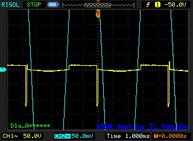

DLE-TEST20 : The
VISCOUS REMANENT MAGNETIZATION (VRM) experiment with the DLE-TB
v1 created on february 9, 2013 - JLN
Labs - last update march 31, 2013 All informations and
diagrams are published freely (freeware) and are intended for a private use and a non commercial
use.
Toutes les informations et
schémas sont publiés gratuitement ( freeware ) et sont
destinés à un usage personnel et non commercial Cliquez ici pour la version FRANCAISE
Mars 29, 2013
- DLE-TEST20
: So as to
understand better the physical phenomenon of the Delayed Lenz
Effect (DLE) which produces the acceleration of the magnetic
rotor under certain conditions, I continue to explore in deep
the effect by the experiments and the measurements. My tests
platform dedicated to the study of the Delayed Lenz Effect
(DLE-TB v1.0) is very useful and helpful for the exploration of
this phenomenon.
In the previous
test DLE-TEST18, I have observed that the maximal
acceleration of the magnetic rotor with the loaded secundary
coil occurs when the coil is placed at 30 mm from the magnetic
rotor. If the secundary loaded coil is placed between 0 and 30 mm
from the rotor, the rotor brakes. In all the cases, the
acceleration effect is observed with a secundary coil with a
ferromagnetic core and not with an air core coil. In this
experiment, I have used a soft iron core (120 mm length, 8 mm
diameter). In a video of the test DLE-TEST19, it has been shown that the
Barkhausen effect is very important with this kind of
ferromagnetic material.
Today, I have
conducted the measurements with a Gaussmeter each 10 mm along the
ferromagnetic core.
The purpose
of this experiment is to measure the temporal
phase shift between the magnetic field
produced by the magnetic rotor (near to its surface) and the
magnetic field of the core (at a distance x mm). This
effect is known under the name of Viscous Remanent
Magnetization : When the magnetic rotor is set in
rotation, it produces a magnetic fluctuation, this fluctuation is
captured by the end of the ferromagnetic core and it propagates
like a magnetic wave in the soft iron rod due to the Bakhausen
effect already tested in the test DLE-TEST19.
Below
the setup of the test DLE-TEST20
To measure the
intensity of the magnetic fluctuation along the soft iron rod, I
have used a Gaussmeter with its Hall probe UGN3503U (here the full data sheet of
the sensor).
A measurement is done each 10 mm.
A digital
oscilloscope is used to measure the phase shift between the
magnetic field of the rotor (fully synchronised with the
excitation coil pulses) and the magnetic field of this
fluctuation at a distance of x mm from the magnetic rotor.
MEASUREMENTS
RESULTS OF THE TEST DLE-TEST20
The measurements
fully confirm that the magnetic field of the fluctuation at a
distance of x mm from the rotor is not in phase avec the
magnetic field of the rotor in motion.
This is VERY INTESTING HERE : Depending on the
distance along the soft iron rod, the phase ofthe magnetic field
of the fluctuation can be in leading or in lagging with respect to the
magnetic field of the magnetic rotor. Below, the measured values
:
Below, an animated
picture which shows the phase shifting measured each 10 mm. The
yellow curve is the pulse sent by the controller to the
excitation coil and used as reference, the blue curve is the
measured magnetic field of the fluctation. At the bottom left,
(Dly_A) is the value of the phase shifting (in ms) measured
between the magnetic field of the rotor and the magnetic field of
the fluctuation.

Below
is the graphical result of the phase shifting and the RPM change
of the rotor when the secundary coil is loaded (data measured in
the test DLE-TEST19)
Comments :
We
notice on the curve above, that the braking effect (common
Lenz effect) and the accelerating effect (reverse Lenz
effect) of the rotating magnetic rotor (blue curve) is DIRECTLY LINKED to the phase shifting
curve of the magnetic fluctuation (red curve). The acceleration of the
rotor is maximal when the phase angle switches from postive to
negative (the
green rectangle area at a distance of 30mm). The loaded secondary
coil is set at the phase shifting point and acts as a wave
reflector, it returns the magnetic wave in opposition phase to
the magnetic rotor in rotation, producing its acceleration ...
Below
the detailled analysis of the Delayed Lenz Effect phenomenon
measured at a distance of 30 mm (optimal point for the max
acceleration).
According
to these three tests with the DLE-TB v1.0, we can now say that
there is a relatively simple and effective method to optimize the
DLE effect and produce the acceleration of the magnetic rotor.
Here
are the key points to get the acceleration of the magnetic by the
DLE effect:
for the magnetic core, it is
necessary to use a ferromagnetic material which has a
maximum Barkhausen effect (soft iron, steel,
nanocrystalline),
to minimize unnecessary losses by
eddy currents, it is preferable to use a laminated core,
a VRM measurement helps to locate
the phase shifting point.
Below,
an interesting video from the AT&T laboratories showing a
mechanical analogy of transmission waves. This allows us to
understand what happens in the ferromagnetic rod of the secondary
coil when the magnetic wave propagates and reflects off the coil
producing the inversion of the Lenz effect.